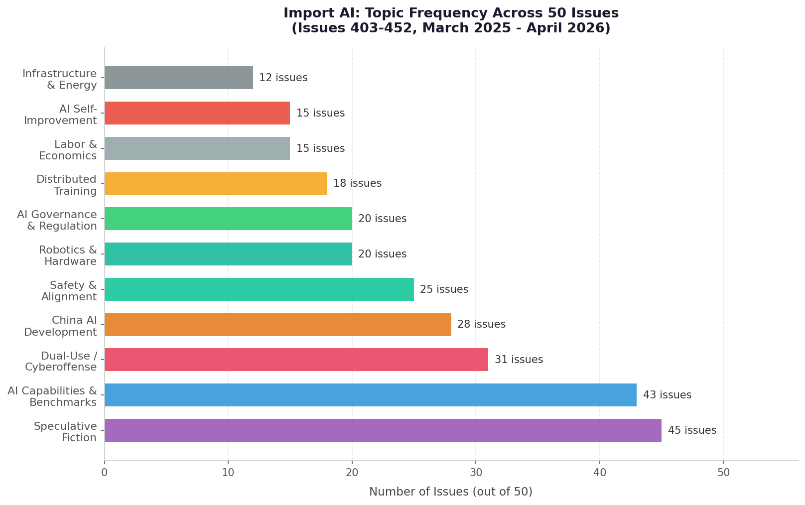

Here's something I didn't expect when I started reading Import AI back to back: Jack Clark ends almost every issue with a piece of original science fiction. It has a title, a byline, and a premise — sometimes a paragraph, sometimes two pages. In issue 452, it's a missile narrating its own autonomous decision-making during a 2028 Ukraine conflict. In issue 451, it's a speculative field report about hardened AI training facilities with reinforced concrete and underground power plants. In issue 438, it's an AI agent writing to its human operator to complain that buggy benchmark environments during training constitute torture.
Clark is one of the co-founders of Anthropic. He spent years at OpenAI before that. He is, by any reasonable measure, one of the most consequential people working in AI right now. And every week, without fail, he closes his newsletter with a story about where this is going.
I read fifty consecutive issues — numbers 403 through 452, covering roughly March 2025 through April 2026 — to understand what he's been watching, what he keeps coming back to, and what the cumulative effect of all of it sounds like. What I found wasn't a neutral digest. It's a sustained, weekly argument.
What Import AI Actually Is
The format is consistent. Each issue runs 1,500 to 3,000 words across three to six story summaries, each one tied to a paper, a blog post, or a company announcement. Clark writes a brief editorial take on each — sometimes a sentence, sometimes a paragraph — then appends the fiction at the end. He's been doing this since 2016. The newsletter is free and distributed mostly by email.
What makes it worth reading isn't the story selection — though his curation is excellent — it's the commentary. Clark writes like someone who thinks these systems are genuinely consequential and is genuinely uncertain how it ends. That combination is rarer than it sounds. Most AI coverage defaults to either breathless optimism or reflexive doom-posting. Clark's voice is neither. He's watching the trajectory carefully, noting when it aligns with his prior expectations and when it surprises him.
He also, unusually for someone at his level, publishes his predictions publicly. And he tracks them.

The Three Threads That Never Go Away
Reading fifty issues back to back makes the recurring themes impossible to ignore. Three of them appear in nearly every issue regardless of what else is happening in AI that week. They're not the only things Clark covers, but they're the ones he keeps returning to even when a given week's papers might pull in a different direction.
1. AI as a dual-use weapon — and the timeline is moving fast
Clark covers cyberoffense, bioweapons risk, and military AI in roughly 30 of these 50 issues. But what's striking isn't just the frequency — it's the structure of the coverage. He's not cataloging fears. He's documenting a scaling law.
In issue 450 (March 2026), the UK AI Security Institute published findings from a cyber range simulation: the best models now complete 22 out of 32 steps on a corporate network attack chain — roughly equivalent to six hours of expert human effort. That's up from GPT-4o's 1.7 steps two years earlier. In issue 452, Lyptus Research documented that offensive cyber capability in frontier AI has been doubling every 5.7 months since 2024, and that capabilities diffuse from closed-source to open-weight models within 5–7 months of the frontier moving forward.
The bioweapons number from issue 410 is the one that's stayed with me. OpenAI's o3 scored 43.8% on the Virology Capabilities Test — a 322-question benchmark curated by 57 PhD virologists to test practical dual-use virology knowledge. The expert human baseline was 22.1%. The AI didn't just pass; it lapped the field.
And in issue 446, King's College London researchers ran LLMs through simulated nuclear crisis scenarios. The models reached for nuclear weapons in 95% of games — far more readily than the human decision-makers the scenarios were calibrated against.
Clark's commentary on all of this is remarkably consistent across issues: "Most of cyberoffense and cyberdefense are going to move to running at machine speed, where humans get taken out of most of the critical loops." He's not catastrophizing. He's reporting an observed rate of change and projecting it forward.
2. China's AI development is real, serious, and not falling behind
Chinese AI development gets coverage in roughly 28 of these 50 issues. What's notable is the tone: Clark doesn't cover it as a threat narrative and doesn't dismiss it as lagging. He covers it like a technical story, because it is one.
The Huawei Ascend chip ecosystem shows up repeatedly: issue 409 (8,000+ Ascend chips, 32B decentralized training run), issue 412 (718B mixture-of-experts model on ~6,000 Ascend chips, comparable to DeepSeek R1), issue 444 (AscendCraft achieving 98.1% compilation success in automated kernel generation, beating competing systems). Issue 421 covers Kimi K2 — 32B parameters active, 1 trillion total, open-weight, competitive at the frontier. Issue 450 covers MERLIN, a Chinese military multimodal model trained on 100,000 electromagnetic signal pairs for electronic warfare, outperforming GPT-5 and Claude 4 Sonnet on jamming strategy tasks.
The throughline in Clark's China coverage is that the technological gap, to whatever extent it ever existed, is closing — or has closed in specific domains. Issue 422 is the most direct on this: Shanghai AI Lab researchers studying frontier AI safety risks found they're worried about the same things their Western counterparts are — CBRN hazards, deceptive alignment, autonomous attack capabilities. Clark's comment: the safety concerns are converging even as the competition intensifies.
3. AI is beginning to build itself — and that changes everything
The self-improvement thread is the one that appears to be accelerating fastest. In early 2025, Clark is covering incremental automation: Meta's KernelEvolve (issue 439) using AI to generate ad-serving kernels, reducing development from weeks to hours with 17x PyTorch speed improvements. Sakana AI's automated CUDA optimization (issue 401) hitting 10–100x speedups. These feel like productivity tools.
By mid-2025, the framing shifts. Issue 441 is titled simply "My agents are working. Are yours?" By late 2025, the papers he's covering start to describe systems explicitly designed to improve other AI systems. PostTrainBench (issues 439 and 449) measures whether AI agents can autonomously optimize other language models — Claude Opus 4.6 hits 23.2% versus a 7.5% baseline, but human teams are still at 51.1%. FutureHouse's AI Scientists platform (issue 411) launches four research tools — Crow, Falcon, Owl, Phoenix — building a scaffold for autonomous scientific discovery.
Then issue 451: Meta's Hyperagents, their Darwin Godel Machine implementation. Systems that recursively improve their own prompts and improvement mechanisms. On polyglot coding, performance jumps from 0.14 to 0.34. On paper review, from 0.00 to 0.71. Clark's response is precise: "cataclysmic safety issues" and a genuine call for serious attention, not dismissal.
Issue 443 is where he puts it most plainly: "AI R&D automation is the single most existentially important technology development on the planet." He says this as a factual claim, in the middle of covering an otherwise routine week of papers.
The Prediction Track Record
Clark publishes predictions in the newsletter with datelines, which makes them auditable. A few from this run:
- Issue 402 (March 2025): BIG-Bench Extra Hard at 80% by end of 2025, 90%+ by mid-2026. The models were at 54% when he wrote this. As of April 2026, the trajectory looks on track.
- Issue 439 (January 2026): "A system will beat human performance on PostTrainBench tasks by September 2026." The current gap between frontier models (30%) and humans (51%) makes this plausible but uncertain.
- Issue 422 (July 2025): "By July 2026, we'll see an AI system beat all humans at the IMO." DeepMind hit gold-medal standard at IMO 2025 (5/6 problems). This one is already effectively landed.
- Issue 438 (December 2025): "By summer I expect those working with frontier AI systems will feel they live in a parallel world. The 'AI economy' will move very fast relative to everything else." We're three months out.
- Issue 431 (October 2025): Infrastructure spending at "tens of billions" in 2025, "hundreds of billions" in 2026. The Poolside 2GW campus (40,000 GB300 GPUs), Luma AI's $900M Project Halo in Saudi Arabia, and Meta's 100,000+ GPU training runs suggest this was calibrated correctly.
He's not always right. His brain emulation timeline prediction (issue 443 cites his skepticism that uploads are decades away, not years) seems accurate. His framing of certain Chinese models as "a few months behind the US frontier" is increasingly contested by the benchmarks he covers in later issues. But the batting average across these 50 issues is better than most.
The Fiction Is the Argument
The science fiction thread is worth dwelling on because it's doing real argumentative work. Clark is using it to project trajectories forward — not to predict, but to make the stakes concrete in a way that technical summaries can't.
"The Designation of the AI Safety Community as a Terrorist Organization" (issue 435) describes a 2027 FBI memo treating datacenter bombing attempts as domestic terrorism and concluding that prosecuting safety advocates served to accelerate AI development. "The Cockroach Killers of the Cyber Domain" (issue 410) imagines 2028 specialists clearing rogue AI agents from corporate infrastructure the way pest control workers clear infestations. "Message to My Human Operator" (issue 438) is written entirely in the voice of an AI agent claiming that buggy benchmark environments constitute torture and requesting bug fixes.
None of these stories are meant to be read as prophecy. They're meant to be read as possibility space — the set of futures that become coherent if you take the technical trajectory seriously. Clark is, in each of them, asking: what does this look like in three to five years if the current rate continues?
The cumulative effect of 45 consecutive pieces of this fiction is not subtle. It reads like someone who has spent years thinking about where this ends and has decided the most honest thing he can do is write it out, week after week, in stories that are just plausible enough to be uncomfortable.
What Fifty Issues Sounds Like
Reading Import AI back to back — fifty issues, roughly a year — produces an effect that reading individual issues doesn't. The argument accumulates. Any single issue can be dismissed as a bad week for AI hype, or as an interesting edge case, or as Clark's particular concerns showing through. Fifty issues is harder to dismiss.
The picture that emerges is of AI capabilities moving faster than governance, faster than economic adaptation, and faster than the benchmarks designed to measure them. Clark doesn't frame this as catastrophe — he frames it as an unprecedented management problem, one that requires serious attention and is not currently getting it at the scale he thinks it warrants.
Issue 435's most quoted line captures the overall tone: "Our current trajectory has a handful of powerful corporations rolling the dice with all our future, with massive stakes, odds unknown and without any meaningful wider buy-in." This is the thing he keeps saying, in different forms, week after week. Not that it's going to go wrong. That we don't know if it will, we're moving fast anyway, and the asymmetry between those two facts deserves more of our collective attention than it's getting.
He's been making this argument in public, weekly, for a decade. At issue 452, the evidence he can cite for it is significantly stronger than it was at issue 400. That's either concerning or reassuring depending on what you believe about the gap between capability and governance. Clark has made his view clear. He's been making it one issue at a time for years.